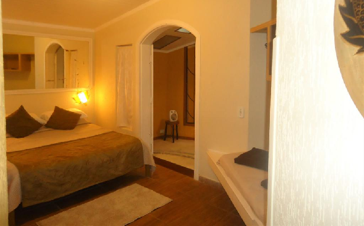
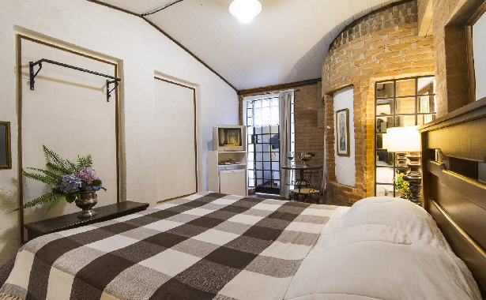
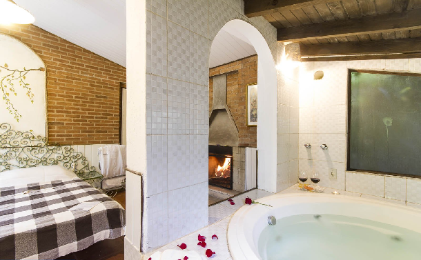
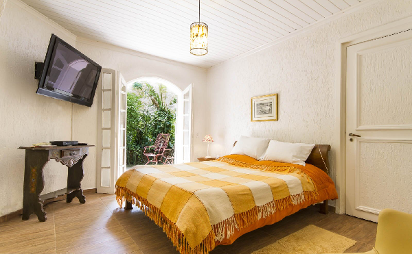
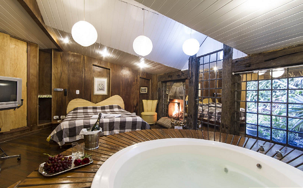
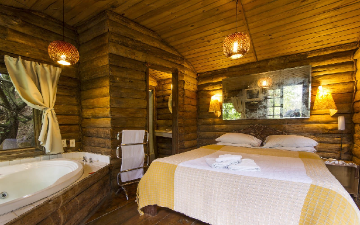
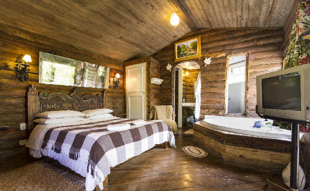
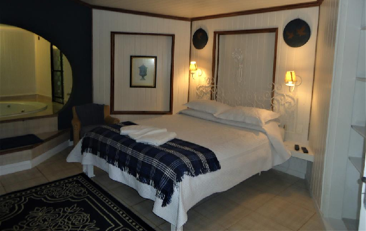

Suíte Encanto – Delicada, pequena e aconchegante, tudo que as outras suítes oferecem. Com porta balcão em arco, voltada para pequena varanda e jardim com muito verde e tranquilidade. Aos pés da cama charmosa salamandra (lareira em ferro). Cama casal tamanho padrão com lençois de algodão para o casal. Banheiro com box em blindex, hidromassagem pequena (p/ um adulto), pia em mármore branco com detalhes em azul. Tv 22" tela plana - Tv a Cabo - Frigobar.
Suíte Romantique – Do seu quarto, abra uma porta balcão em arco de 1.20M no anexo de sua suíte, onde criamos um ambiente exclusivo. Ambiente com lareira e tornando mais exclusivo, com banheira de hidromassagem "anatômica" para casal, lareira, para curtir o fogo, um charme... Suíte dentro do corpo da Pousada - cama king size, com lençois de algodão, delicioso e terapêutico lençol térmico, com controle de temperatura individual para o casal, mantendo a cama aquecida sempre que quiser - TV LCD 32" - TV a Cabo- Banheiro, box em blindex, ducha pressurizada. Única suíte que acomodam 1 casal e mais 1 acompanhante (consulte*) – Frigobar.
Suíte dos Lagos – Única no estilo, um ninho aconchegante. Quem se hospeda nesta suíte, não quer sair nem para passear!!!!! Com lareira em ferro fundido (salamandra), peça adquirida em antiquário em funcionamento. Cama king-size em madeira, com lençol térmico, controle de temperatura individual, proporcionando total relaxamento e se quiser sempre quentinha, lençóis de algodão. Banheira de hidromassagem máster retangular (p/casal), box blindex, ducha pressurizada. Tv 21" tela plana (stereo) Tv a cabo - (elemento totalmente desnecessário) Frigobar.
Suíte da Lua – Romântica e confortável como as demais. Nesta suite você encontra uma hidromassagem redonda máster, é realmente para relaxar ao máximo, esquecer o mundo lá fora e viver o prazer do momento, com o aroma e calor da lenha queimando na lareira. Feito para quem ama, e quer ser amado e tem imaginação... Cama king size, com lençois de algodão, aconchegante lençol térmico e terapêutico com controle de temperatura individual para o casal, lhe oferecendo uma noite de sono sem igual! Cabeceira da cama em ferro trabalhado. Banheiro com ducha pressurizada e porta box em blindex. TV 21" tela plana (stereo) Tv a cabo - Frigobar.
Suíte Primavera – Projeto estilo clássico, com toque de arquitetura e conceitos modernos em todos os detalhes, foi fotografada pela revista Próxima Viagem - em matéria não paga. Cama king size, com lençois de algodão, cabeceira em peroba antiga artesanal e elegante. Ao lado de uma porta balcão em arco com 1.20M, que leva a uma pequena e discreta varanda. Junte a isto o delicioso e terapêutico lençol térmico com controle de temperatura individual para o casal, mantendo a cama sempre aquecida. Poltronas de frente a belíssima salamandra estilo francês (lareira em ferro). Mesmo no inverno, com a porta para o jardim aberta para sentir o ar fresco. Aos pés da cama, um antiqüíssimo portal em ferro, manualmente trabalhado, que separa a parte de banho. Bancada com pia em mármore travertino e portas artesanais em peroba antiga, box em blindex e hidromassagem redonda máster -. – Para privacidade do casal, sanitário fica reservado com porta. TV LCD 32”- Tv a Cabo - Frigobar.
Suíte Aconchego – Prazer e conforto – Entrada com portão e íntimo jardim com cadeiras para relaxar. Deliciosa cama king size, lençóis de algodão, sempre quentinho com lençol térmico terapêutico com controle de temperatura individual para o casal. Deitados avistam a hidromassagem circundada com deck em madeira nobre e vista para jardim íntimo atrás da hidro. Balcão com pia em detalhes de madeira, porta para banheiro garantindo privacidade ao casal, com ducha pressurizada, porta blindex. Deliciosa lareira - TV 32" tela plana stereo - TV a Cabo - Frigobar.
Suíte Cabana Lodge – Feita para quem tem espírito jovem, e pernas para caminhar, É puro romantismo e privacidade! O conforto interno segue o padrão das demais suítes. Privacidade é o que esta suíte oferece! Cama king size com lençóis de algodão, aquecida com terapêutico lençol térmico, com controle de temperatura individual para o casal. Cabeceira entalhada a mão, tendo ao fundo um grande e antigo espelho. Deitado você poderá apreciar a paisagem, onde mesmo no inverno, com a porta balcão aberta, sentindo o nevoeiro (neblina) - vocês estarão sempre quentinhos (com o lençol térmico e respirando o incrível ar de Campos. Com hidromassagem de canto para casal, banheiro com box blindex e ducha pressurizada. TV 22" tela plana (stereo) / Tv a cabo. – Frigobar.
Suíte Cabana Deck – Feita para quem tem espírito jovem, e pernas para caminhar, É puro romantismo! O conforto interno segue o padrão das demais suítes. Cama king size com lençóis de algodão, aquecida com terapêutico lençol térmico, com controle de temperatura individual para o casal. Cabeceira entalhada a mão, tendo ao fundo, antigo espelho. Deitado você poderá apreciar o fogo da lareira em cone, porta balcão p/ o deck. Hidromassagem de canto para casal, banheiro com porta para privacidade do casal, box em blindex e ducha pressurizada. TV 22" tela plana (stereo) - TV a Cabo - Frigobar.
Suíte Sonhos – Decoração leve e elegante, cama king size, com cabeceira em ferro trabalhada, lençóis de algodão, sempre quentinha com lençol térmico, terapêutico com controle de temperatura individual para o casal. Da cama pode-se avistar a hidromassagem redonda master, a lareira e TV LCD (tela plana 32” stereo), TV a Cabo. Banheiro com porta garantindo maior privacidade ao casal, com ducha pressurizada, porta blindex. Tudo para seu aconchego. Voltado para um belíssimo jardim e piscina SPA (área em comum da pousada), Frigobar.